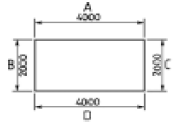

건축일반시공산업기사 (2005-05-29 기출문제)
1과목: 건축일반
1. 결합재로서 시멘트를 사용하지 않고 폴리에스테르수지 또는 에폭시수지 등을 액상으로 하여 사용하고, 굵은골재 및 분말상 충전제를 혼합하여 만든 것은?
- PS콘크리트
- 프리팩트콘크리트
- 레진콘크리트
- 섬유보강콘크리트
(정답률: 71%)

2. 목조 왕대공지붕틀에서 압축력과 휨모멘트를 동시에 받는 부재는?
- 빗대공
- 왕대공
- 평보
- 人자보
(정답률: 84%)
3. 평면도에서 표현되지 않는 것은?
- 각 실의 벽체의 길이
- 욕조, 세면기의 위치
- 벽체의 두께
- 반자의 높이
(정답률: 89%)
4. 철근과 콘크리트의 부착력 관계에 대한 기술 중 잘못된 것은?
- 압축강도가 큰 콘크리트일수록 부착력은 커진다.
- 콘크리트의 부착력은 철근의 주장(周長)에 반비례한다.
- 철근의 표면 상태와 단면 모양에 따라 부착력이 좌우된다.
- 부착력은 정착길이를 크게 증가함에 따라서 비례 증가되지는 않는다.
(정답률: 67%)
5. 다음 중 열가소성 수지가 아닌 것은?
- 요소수지
- 아크릴수지
- 염화비닐수지
- 폴리에틸렌수지
(정답률: 74%)
6. 다음 그림에서 치수기입법이 잘못된 것은?

- A
- B
- C
- D
(정답률: 79%)
7. 철근콘크리트 구조에 대한 설명으로 옳지 않은 것은?
- 내진, 내화, 내구적이다.
- 구조물의 형상치수를 자유롭게 선택할 수 있다.
- 균열이 발생되기 쉽다.
- 공기가 짧으며 철거가 용이하다.
(정답률: 80%)
8. 네트워크 공정표의 크리티칼 패스(CP)에 대한 설명으로 옳은 것은?
- 결합점이 가지는 여유시간
- 미리 지정된 공기
- 개시결합점에서 종료결합점에 이르는 가장 긴 패스
- 후속작업의 TF에 영향는 끼치는 플로트
(정답률: 77%)
9. 벽돌벽의 두께 결정요소와 가장 관계가 먼 것은?
- 벽의 높이
- 건물의 층수
- 벽돌의 쌓는 방법
- 벽의 길이
(정답률: 75%)
10. 제도 용지에 관한 설명으로 옳지 않은 것은?
- 도면은 그 길이 방향을 좌우 방향으로 놓은 위치를 정 위치로 한다.
- A1 용지의 크기는 약 1.0m2 이다.
- A0 제도 용지의 단변과 장변의 비는 1:√2이다.
- A0 용지가 A1용지보다 크다.
(정답률: 85%)
11. 다음 중 하중에 저항하는 구조부재로 볼 수 없는 것은?
- 철골보
- 철근콘크리트기둥
- 경량칸막이벽
- 벽돌내력벽
(정답률: 82%)
12. 시공자의 선정방법에 있어서 건설업자의 자재력, 기술, 경력, 신용 등을 조사하여 소수(3∼7정도)의 참가자를 건축주가 선정하여 입찰시키는 방법은?
- 일반경쟁입찰
- 지명경쟁입찰
- 특명입찰
- 수의계약
(정답률: 87%)
13. 금속의 방식법에 대한 설명 중 옳지 않은 것은?
- 다른 종류의 금속을 서로 잇대어 사용한다.
- 표면은 깨끗하게 하고 물기나 습기가 없도록 한다.
- 균질한 것을 선택하고 사용할 때 큰 변형을 주지 않도록 한다.
- 도료나 내식성이 큰 금속으로 표면에 피막을 하여 보호한다.
(정답률: 77%)
14. 철근콘크리트 압축부재에 관한 설명 중 옳지 않은 것은?
- 띠철근 압축부재의 단면의 최소 치수는 300mm 이다.
- 띠철근 압축부재의 최소 단면적은 60,000mm2 이다.
- 압축부재의 축방향 주철근의 최소 개수는 직사각형 띠철근 내부의 철근의 경우 4개이다.
- 압축부재의 축방향 주철근의 최소 개수는 나선철근으로둘러싸인 철근의 경우 6개이다.
(정답률: 77%)
15. 조적조에서 테두리보의 역할에 대한 설명으로 옳지 않은 것은?
- 분산된 벽체를 일체로 연결한다.
- 개구부만을 보강하는 역할을 한다.
- 세로철근의 끝을 정착한다.
- 지붕이나 바닥의 하중을 균등하게 벽체에 전달한다.
(정답률: 82%)
16. 다음 중 조적조 건물의 벽돌벽 균열 원인과 가장 관계가 먼 것은?
- 건물기초의 부동침하
- 건물의 불균형 하중
- 문꼴크기의 불합리ㆍ불균형 배치
- 벽돌 쌓기전의 벽돌에 약간의 물축임
(정답률: 73%)
17. 턴키(turn key)도급방식이란?
- 공사금액을 구성하는 물공량 또는 단위공사 부분에 대한 단가만을 확정하고 공사완료시 실수량에 따라 정산하는 방식
- 공사의 실비를 건축주와 도급자가 확인 정산하는 방식
- 공사의 모든 요소를 포괄하여 계약하는 도급방식
- 공사비의 총액을 확정하여 계약하는 도급방식
(정답률: 77%)
18. 보이지 않는 부분을 그릴 때 사용하는 선의 종류는?
- 굵은 실선
- 가는 실선
- 파선
- 일점 쇄선
(정답률: 85%)
19. 제도의 선긋기 방법에서의 요령 및 주의사항 중 옳지 않은 것은?
- T자는 수시로 닦아서 도면이 더렵혀지지 않도록 한다.
- 수직선은 아래에서 위로 긋는다.
- 같은 도면에서 여러 개의 수평선은 T자를 아래에서 위로 끌어 올리면서 차례로 긋는다.
- 사선은 삼각자의 방향에 따라서 아래에서 위로, 또는 위에서 아래로 긋는다.
(정답률: 74%)
20. 목구조의 마루 중 보를 쓰지 않고 층도리와 간막이도리에 직접 장선을 걸쳐대고 그 위에 마루널을 깐 것은?
- 납작마루
- 홑마루
- 보마루
- 짠마루
(정답률: 70%)
2과목: 조적, 미장, 타일시공 및 재료
21. 콘크리트 바탕의 바닥에 시멘트 모르타르 정벌 바름시 표준 바름 두께는?
- 12mm
- 15mm
- 18mm
- 24mm
(정답률: 69%)
22. 회반죽의 정벌바름시 배합에 필요치 않은 재료는? (단, 콘크리트 바탕)
- 소석회
- 해초풀
- 모래
- 여물
(정답률: 70%)
23. 석고 플라스터에 대한 설명 중 옳지 않은 것은?
- 방화성이 크다.
- 원칙적으로 해초 또는 풀즙을 사용하지 않는다.
- 알칼리성이므로 유성페인트 마감을 할 수 없다.
- 경화ㆍ건조시 치수 안정성이 좋다.
(정답률: 78%)
24. 100m2의 콘크리트 바탕의 바닥에 모르타르 미장을 할 때 소요되는 미장공의 인원수는? (단, 줄눈이 없고, 바름두께 24mm인 경우)
- 5 인
- 7 인
- 9 인
- 12 인
(정답률: 74%)
25. 시멘트 모르타르로 콘크리트 바탕의 바닥 정벌바름시 시멘트 모르타르의 표준 용적 배합비는? (시멘트:모래)
- 1:1
- 1:2
- 1:3
- 1:5
(정답률: 70%)
26. 미장공사의 메탈 라스 바탕에서 메탈라스의 접합부는 최소얼마 이상 겹치도록 하여야 하는가?
- 200mm
- 300mm
- 400mm
- 500mm
(정답률: 67%)
27. 회반죽 바름에 대한 설명 중 옳지 않은 것은?
- 초벌바름은 바탕면에 충분히 부착되도록 바르고 표면에 거친면을 만든다.
- 바름작업 중에는 통풍이 잘되게 하는 것이 좋으나, 정벌바름 후에는 통풍을 피하는 것이 좋다.
- 정벌바름은 반드시 밑바르기를 하고 나서 바르기를 한다.
- 재벌바름이 반건조하여 물이 빠지는 정도를 보아서 정벌바름한다.
(정답률: 74%)
28. 타일 공사시 외기의 기온이 몇℃ 이하일 때 타일작업장 내의 온도가 10℃ 이상이 되도록 보양하여야 하는가?
- 4℃
- 2℃
- 0℃
- -2℃
(정답률: 62%)
29. 타일 공사에서 타일을 붙인 후 며칠간 진동이나 보행을 금하는가?
- 3일간
- 4일간
- 5일간
- 6일간
(정답률: 63%)
30. 테라코타에 관한 기술 중 틀린 것은?
- 소성 제조한 속이 빈 대형의 점토제품이다.
- 건축물의 구조용으로 주로 사용된다.
- 원료토는 주로 석기질 점토나 상당히 철분이 많은 점토를 사용한다.
- 석재보다 가볍고 색조가 자유롭다.
(정답률: 74%)
31. 벽체에 떠붙이기 타일 붙임을 할 경우 특수타일의 붙임품은 일반타일 붙임품에 얼마를 더 가산하는가?
- 20-30%
- 35-50%
- 50-70%
- 70-100%
(정답률: 69%)
32. 모자이크타일 붙임시 줄눈나비의 표준은?
- 1mm
- 2mm
- 3mm
- 4mm
(정답률: 71%)
33. 테라조 바름에서 기계갈기 일 때, 테라조를 바른 후 며칠이상 경과한 후 경화정도를 보아 갈아내기를 하는가?
- 2 - 3일
- 4 - 5일
- 5 - 7일
- 9 - 10일
(정답률: 67%)
34. 떠붙이기 타일붙임시 붙임모르타르의 두께는? (단, 타일크기 108×60mm 이상)
- 3 - 5mm
- 5 - 7mm
- 8 - 100mm
- 12 - 24m
(정답률: 54%)
35. 벽체에 떠붙이기 타일붙임시 시멘트 모르타르의 표준 용적배합비는? (시멘트:모래)
- 1:1 - 1:2
- 1:3 - 1:4
- 1:4 - 1:5
- 1:5 - 1:6
(정답률: 34%)
36. 타일의 접착력 시험에 대한 설명 중 옳지 않은 것은?
- 시험결과의 판정은 접착강도가 4kg/cm2 이상이어야 한다.
- 타일의 접착력 시험은 500m2 당 한 장씩 시험한다.
- 시험할 타일은 먼저 줄눈부분을 콘크리트면까지 절단하여 주위의 타일과 분리시킨다.
- 시험은 타일 시공후 4주 이상일 때 행한다.
(정답률: 69%)
37. 3m2 면적의 벽 바탕에 108×108mm각 타일을 떠붙이기공법으로 시공할 때 타일공의 품은?
- 0.48인
- 0.56인
- 0.72인
- 0.84인
(정답률: 74%)
38. 타일공사의 바탕만들기에 관한 설명 중 옳은 것은? (단, 모르타르 바탕)
- 바탕고르기 모르타르를 바를 때 2회에 나누어서 바르지 않는다.
- 타일붙임면의 바탕면은 평탄하게 하고, 바탕면의 평활도는 바닥의 경우 3m당 ± 3mm로 한다.
- 바름두께가 20mm 이상일 경우에는 1회에 15mm 이하로 하여 나무 흙손으로 눌러 바른다.
- 바닥면은 구배를 두어서는 안된다.
(정답률: 60%)
39. 인조석 바름에 대한 설명으로 옳지 않는 것은?
- 정벌바름시 시멘트와 종석의 비빔 비율은 1:1.5 로 한다.
- 정벌바름의 바름두께는 7.5mm로 한다.
- 줄눈은 줄눈나누기를 하여 줄눈대를 시멘트풀 또는 모르타르로 고정시킨다.
- 정벌바름은 재벌바름의 경화정도를 살펴서 미리 배합비 1:3인 모르타르를 5mm 정도 바르고 실시한다.
(정답률: 69%)
40. 바닥 타일붙이기에서 붙임 모르타르의 1회 깔기 면적으로 적당한 것은?
- 1 -2 m2
- 2.5 - 3m2
- 3.5 - 4m2
- 6 - 8m2
(정답률: 67%)
3과목: 안전관리
41. 고온소성의 무수석고를 특별한 화학처리를 한 것으로 킨스 시멘트라고도 불리우는 것은?
- 경석고 플라스터
- 마그네시아 시멘트
- 보드용 플라스터
- 돌로마이트 플라스터
(정답률: 54%)
42. 접착붙이기에 쓰이는 타일의 무게는 판형인 경우 판형당 최대 얼마 이하이어야 하는가?
- 200g
- 900g
- 1300g
- 1700g
(정답률: 63%)
43. 타일붙임용 시멘트 모르타르는 건비빔(시멘트+모래)한 후 얼마이내에 사용해야 하는가?
- 1시간
- 2시간
- 3시간
- 4시간
(정답률: 55%)
44. 5m2의 바닥에 모자이크 타일을 붙일 경우 소요되는 모자이크 타일의 정미수량은? (단, 1장의 규격 30×30㎝)
- 50장
- 56장
- 65장
- 71장
(정답률: 61%)
45. 다음 중 공기 중의 탄산가스와 화합하여 경화하는 미장 재료는?
- 돌로마이트 플라스터
- 혼합석고 플라스터
- 시멘트 모르타르
- 경석고 플라스터
(정답률: 63%)
46. 테라조 바름시 최대 줄눈 간격은 얼마 이하로 하는가?
- 0.5m
- 1m
- 1.5m
- 2m
(정답률: 65%)
47. 바닥타일 붙이기에서 바탕처리용 모르타르의 바름두께는 몇 mm 정도로 하는가?
- 10mm
- 20mm
- 30mm
- 40mm
(정답률: 47%)
48. 시멘트 모르타르 바름에서 바닥을 제외한 부분의 1회 바름 두께의 표준은? (단, 메탈라스 및 와이어라스의 라스 먹임의 경우는 제외)
- 6mm
- 9mm
- 12mm
- 15mm
(정답률: 59%)
49. 타일붙임에서 치장줄눈파기는 타일을 붙인 후 몇 시간이 경과한 후 하는 것이 적당한가?
- 1시간
- 2시간
- 3시간
- 4시간
(정답률: 74%)
50. 미장 재료의 취급에 관한 설명 중 옳지 않은 것은?
- 미장용 재료는 섞이거나 오손되지 않도록 보관한다.
- 시멘트는 지면보다 최소 50cm 이상 높게 만든 마룻바닥이 있는 창고 등에 건조상태로 보관한다.
- 제품은 제조회사에서 출하시의 용기나 포장지 또는 묶음으로 보관한다.
- 폴리머 분산제를 보관하는 곳은 고온, 직사일광을 피하고 동절기에는 온도가 5℃ 이하로 되지 않도록 주의한다.
(정답률: 70%)
51. 다음 중 안전수칙에 포함되지 않는 사항은?
- 표준 작업시간
- 작업자의 두발, 복장 및 장구등의 규제
- 각종기계의 동작순서의 강조
- 작업방법, 보호구 착용시기 및 종류
(정답률: 58%)
52. 연료와 산소의 화학적 반응을 차단하는 힘이 강하여 소화능력이 이산화탄소 소화기의 2.5배 정도이며 컴퓨터, 고가의 전기기계, 기구의 소화에 많이 이용되는 소화기는?
- 분말소화기
- 포말소화기
- 강화액소화기
- 할론가스소화기
(정답률: 75%)
53. 근로불능상해일수(근로손실일수)를 나타낸 식은?
- 연 근로일수 × 365/300
- 휴업일수 × 300/365
- 연 근로일수 × 300/365
- 휴업일수 × 365/300
(정답률: 77%)
54. 시각의 표시중 정량적 표시장치에 속하지 않는 것은?
- 계수형
- 정침동목형
- 정목동침형
- 압력형
(정답률: 72%)
55. 인간과 기계의 기능을 비교할 때 인간이 기계를 능가하는 기능으로 옳지 않은 것은?
- 융통성이 있다.
- 발생할 결과를 추리한다.
- 여러 가지 다른 기능들을 동시에 수행한다.
- 정보와 관련된 사실을 적절한 시기에 상기할 수 있다.
(정답률: 75%)
56. 재해의 원인 중 신체적 원인에 해당되지 않는 것은?
- 작업자의 피로
- 작업자의 수면부족
- 작업복의 부적당
- 작업자의 질병
(정답률: 80%)
57. 산업재해 조사표에 기록해야 할 내용이 아닌 것은?
- 재해발생 일시와 장소
- 피해자의 의견
- 재해원인과 결과
- 재해유발자 및 재해 신상명세
(정답률: 73%)
58. 다음중 분말 소화 약제가 아닌 것은?
- 중탄산소다
- 탄산마그네슘
- 인산 3칼슘
- 사염화탄소
(정답률: 60%)
59. 안전색채의 선택시 고려하여야 할 사항이 아닌 것은?
- 순백색을 선택한다.
- 자극이 강한 색은 피한다.
- 안정감을 내도록 한다.
- 밝고 차분한 색을 선택한다.
(정답률: 75%)
60. 안전의 3요소로 옳지 않은 것은?
- 자본적 요소
- 교육적 요소
- 관리적 요소
- 기술적 요소
(정답률: 78%)